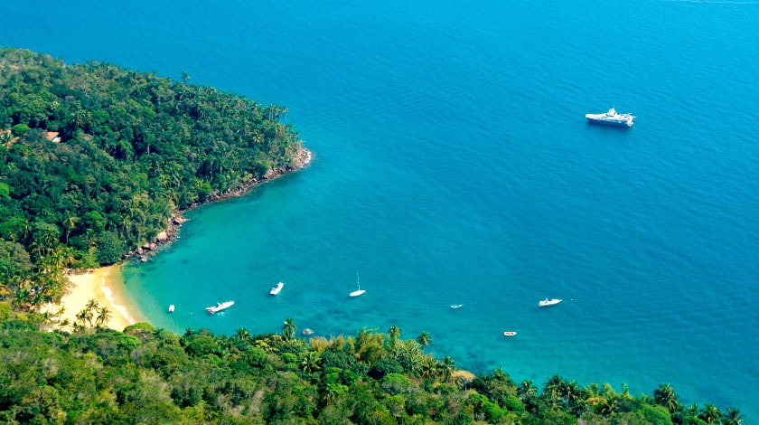

Ícone do Rio de Janeiro, o Cristo é, sem dúvidas, um dos mais célebres pontos turísticos do Brasil. E sua fama roda o mundo! Ao lado da Muralha da China, do Coliseu e do Taj Mahal, a famosa estátua integra a lista das Sete Novas Maravilhas do Mundo Moderno, feita pela votação da New 7 Wonders Foundation. No topo dos 710 m de altura do Morro do Corcovado, o monumento de 38 m, impressiona pela imponência desde sua inauguração, em outubro de 1931. Todos os anos, mais de 600 mil pessoas atravessam a Floresta da Tijuca com o Trem do Corcovado e chegam aos pés da estátua num mix de emoção, contemplação e fé.

Além de ser a maior ilha da baía de Angra dos Reis, a área de 190 km² possui grande parte recoberta por natureza densa emoldurada pelo azul do mar. Com atrativos como trilhas ecológicas, passeios de barco e mergulhos nas águas transparentes, Ilha Grande é destino de muitos turistas todos os anos, assim como outras ilhas e praias do arquipélago.
A apenas 200 km da capital fluminense, a cidade de Paraty é perfeita para os apreciadores de história, romance e literatura. O Centro Histórico do município é considerado Patrimônio Nacional pelo IPHAN e “o conjunto arquitetônico colonial mais harmonioso” do Brasil pela UNESCO. Com 33 quarteirões, suas ruas possuem calçamento pé de moleque e igrejas e casarões de arquitetura colonial que complementam o cenário histórico. Em meio à serra, entre o litoral paulista e fluminense, o destino é procurado por turistas em busca de passeios de escunas até as ilhas paradisíacas da região e atrações culturais, como a Festa Literária Internacional de Paraty, a FLIP.

O mais importante parque urbano de São Paulo, o Ibirapuera é ponto de encontro de amigos e famílias. No espaço de quase 1.600 milhão m² de área verde em meio a importantes avenidas da cidade, há atrações para todos! Tem postos de aluguel de bicicleta, quadras de futebol, faixa de caminhada e corrida, além de espaços para piqueniques e descanso em meio ao verde.
Minas Gerais é estado conhecido por suas igrejas históricas com ricos acervos barrocos, mas a natureza também brilha em um destes pontos turísticos do Brasil. Apesar de não ter um litoral, Minas tem o Lago de Furnas, chamado de “Mar de Minas”, que faz a diversão dos viajantes. Suas águas cristalinas banham 34 municípios, formando pequenos lagos, praias artificiais, cachoeiras, piscinas naturais e cânions com mais de 20 m de altura. Um passeio especialmente procurado pelos turistas é o roteiro de barco pelos cânions de Capitólio. História, sol e mar nos pontos turíst